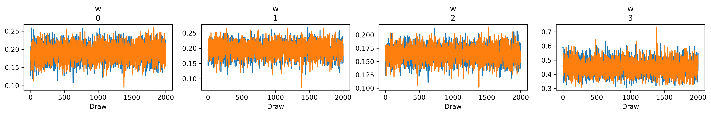

This post just shows what a Dirac delta distribution is and how to make a mixture of Dirac delta distributions in PyMC.
The Dirac delta distribution is somewhat unlike most distributions you will come across. Instead of having some spread of non-zero probability density of a measurable set of possibilities, we have all of the density concentrated on a single outcome. Usually denoted \(\delta\), it is defined by
\[\delta (x) = \lim_{\sigma \rightarrow 0} \frac{1}{|\sigma| \sqrt{\pi}}e^{-\left( \frac{x}{\sigma} \right)^2}\]
which can be thought of as a normal distribution whose standard deviation limits to zero. The first time I encountered this strange creature of mathematics I thought it was little more than a curiosity, but it turns out to be a highly useful and general tool in statistics, and engineering.
But why would you want to have a mixture of Dirac delta distributions? There is no known (to me) use case for having a mixture of “only” Dirac delta distributions because it would be equivalent to simply having a discrete random variable with that many levels. Rather a mixture of Dirac delta distributions is of theoretical importance. You can represent a discrete (i.e. countable) random variable as a mixture of continuous random variables.
Let us setup an example. Suppose I have
\[f(x) = \sum_{i=0}^{k-1} w_i \delta(x-i)\]
where \(\vec W\) follows a Dirichlet distribution and \(X\) follows a discrete uniform distribution \(U(0,k-1)\). This is an unusual construction. Notice that \(\sum_{i=0}^{k-1} W_i = 1\) giving us our mixture distribution of Dirac delta distributions. The Dirac delta distributions really just force all of the \(x\) values to either match with some \(w_i\) or not. Thus, indirectly, \(w_i\) is our estimate of \(Pr(x_i)\).
Here is some Python code simulating this example. The number of such distributions is controlled by the hyperparameter \(k\), which I have taken to be three. The sample size is \(m=10^3\).
"""Sample a PyMC mixture of Dirac delta distributions and save its trace plot."""
import os
import pymc as pm
import arviz as az
import matplotlib.pyplot as plt
import numpy as np
# Sample size
m = 10**3
# Number of distributions in mixture
k = 3
# Generate data
data = np.random.randint(0,k,size=m)
# Model
basic_model = pm.Model()
# Mixture of Dirac Delta
with basic_model:
w = pm.Dirichlet('w', a=np.array([1]*k))
components = [pm.DiracDelta.dist(c=i) for i in range(k)]
like = pm.Mixture('like', w=w, comp_dists=components, observed=data)
with basic_model:
idata = pm.sample(2000)
with basic_model:
az.plot_trace(idata)
plt.tight_layout()
os.makedirs("figures", exist_ok=True)
plt.savefig("figures/dirac_mixture_trace.png", dpi=300, bbox_inches="tight")
Notice that our parameters are roughly centered around \(\frac{1}{3}\). This is because there are three outcomes for \(x\) and they were all equally probable.
But there is a use case for including Dirac delta distributions in a mixture with other distributions: inflated values. An inflated value is one in which it is extremely common among other values. A typical example of an inflated value is zero-inflation, where zero is especially common. I’ve seen (what was purportedly) phone call durations be zero-inflated. But you can also have inflation of values other than zero. Let’s take our same example from above of mixing three Dirac delta distribution and include a Poisson distribution! That is to say, we will have a mixture of a Poisson distribution with inflation of 0, 1, and 2.
Here is some Python code to run this simulation.
"""Sample a PyMC mixture of Dirac delta and Poisson distributions and save its trace plot."""
import os
import pymc as pm
import arviz as az
import matplotlib.pyplot as plt
import numpy as np
# Sample size
m = 10**3
# Number of distributions in mixture
k = 3
# Generate data
data = np.random.randint(0,k,size=m)
data = np.concatenate((data, np.random.poisson(size=m)))
# Model
model = pm.Model()
# Mixture of Dirac Delta and Poisson
with model:
w = pm.Dirichlet('w', a=np.array([1]*(k+1)))
mu = pm.Poisson.dist(1)
components = [pm.DiracDelta.dist(c=i) for i in range(k)]
components += [mu]
likelihood = pm.Mixture('like', w=w, comp_dists=components, observed=data)
with model:
idata = pm.sample(2000)
with model:
az.plot_trace(idata)
plt.tight_layout()
os.makedirs("figures", exist_ok=True)
plt.savefig("figures/dirac_poisson_mixture_trace.png", dpi=300, bbox_inches="tight")
Notice that the weights are not all around \(\frac{1}{3}\). With the Poisson distribution having a mean parameter of \(\lambda = 1\) it tends to take up more of the probability mass than the inflated values. That is true for this example where the data generating process is constructed to be so. Also notice that \(w_i\) is no longer simply the probability of \(p(x_i)\) because some values \(x_i\) could be generated by either a Dirac delta distribution or by the Poisson distribution.
Dirac delta distributions can represent discrete probability distributions. More practically, we can create mixture distributions that combine Dirac delta distributions with other distributions.